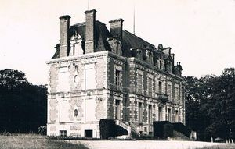
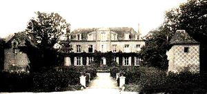
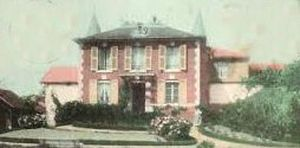
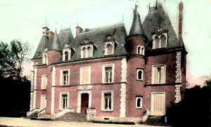
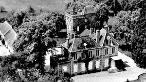
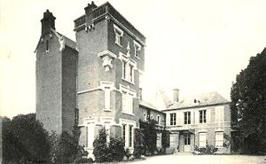

Recensement Jean-Claude Truffet
| Département | 45 — Loiret |
| Canton | La Ferté-Saint-Aubin |
| Commune | Marcilly-en-Villette |
| Type d'édifice | Château |
| Période d'origine | XIX |






quatre châteaux dans cet article; Cerf-bois, Chapelle, Houssaies, et des Tourelles. Du CERF-BOIS, au début du XIXe siècle, il n'y avait au Cerf-Bois qu'une rustique maison de maître typiquement solognote. Sa propriétaire en était, dit-on, Mlle Alix, qui habitait le plus souvent à Férolles. En 1826, Étienne de Mainville qui faisait alors restaurer le château d'Alosse, agrandit sa propriété en achetant les terres du Cerf Bois. Mais les frais de restauration d'Alosse ayant été très onéreuses, Étienne de Mainville dut vendre une grande partie de son domaine et se retira à sa propriété du Cerf Bois. En 1848, il commença la construction du château actuel, mais faute d'argent, le chantier dura jusqu'en 1858 et fut terminé par son fils. En 1878, la propriété fut vendue à Albert Pinçon, qui créa en 1891 le parc et fit creuser la pièce d'eau. Son uvre fut continuée par son gendre, le baron de Labeau, qui a transmis le domaine à sa fille, Mme Valdelièvre. Ses enfants l'habitent toujours. HOUSSAYE, construit dans le quatrième quart du XIXe siècle, appartient à la famille Arvengas depuis le début du XXe siècle. La façade sur jardin possède une belle galerie en pan de bois, élévation à travées, un étage carré ; étage de comble: toit en pavillon ; toit à longs pans ; pignon couvert :en ardoise
CHAPELLE, du XIXe siècle, il y avait là une ancienne place forte seigneuriale, dont la plate-forme et les fossés étaient encore visibles au XIXe siècle. En 1514, Guillaume Le Jart est seigneur des Chapelles. Au XVIIe siècle, la terre est aux Guéribalde et au XVIIIe siècle elle passe aux mains de la famille de Tolède. La demeure est saisie après une banqueroute et rachetée par le marquis de Coué, seigneur de la Ferté. En 1840, Hippolyte Pinçon, marié avec sa cousine, Esther Driard qui a reçu en dot le château, fait construire l'édifice actuel, à l'emplacement de l'ancien château. Il s'attache également à mettre en valeur les terres du domaine, en les marnant et en y plantant des pins. DES TOURELLES, sur le bois dit de Saint-Aignan ou des Coudreaux qu'il a acheté en 1852, le propriétaire parisien Julien Coiffier reconstruit une ferme qu'il avait précédemment bâtie le long de l'ancien chemin de Bourges (de Marcilly à Olivet) et implante à côté le château des Tourelles. Julien Coiffler a été maire de la commune de Marcilly de 1877 à 1888. Julien Ratié, pharmacien à Paris, rachète en 1926 le domaine qui comprend des terres, des vignes et un bois avec un beau parc, une roseraie et des espaliers d'arbres fruitiers. C'est également une magnifique propriété de chasse. Après la mort de Julien Ratié le domaine est vendu en 1955 .
Cerf-Bois;, Étienne de Mainville Houssaye; famille Arvengas, Chapelle;famille de Tolède. Tourelles;Julien Coiffier
"
quatre châteaux à Marcilly en Vilette, Cerf-bois grav-1-2, Chapelle grav-3-4, Houssaies grav-6-7, et des Tourelles grav-5. Cerf-Bois 47° 45' 56" nord, 2° 05' 25" est Chapelle 47° 47' 00" nord, 2° 03' 33" est Houssaye 47° 45' 43" nord, 2° 01' 44" est